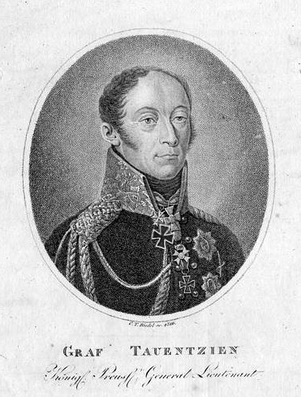
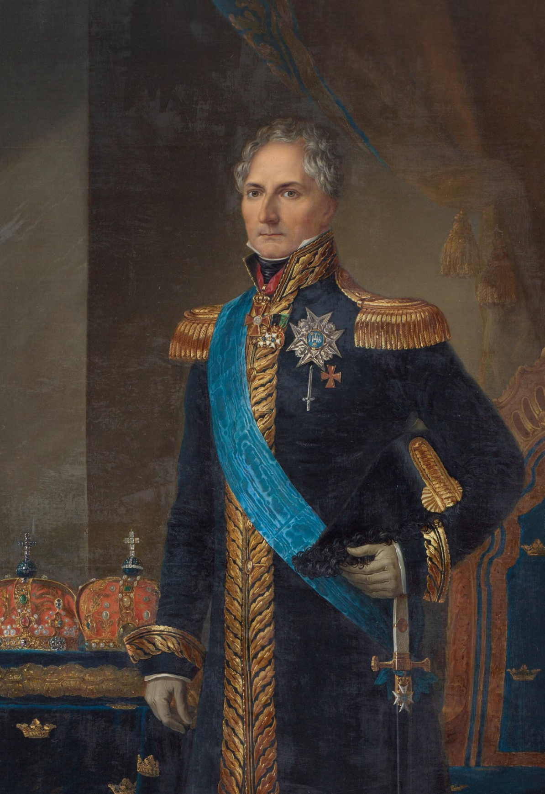
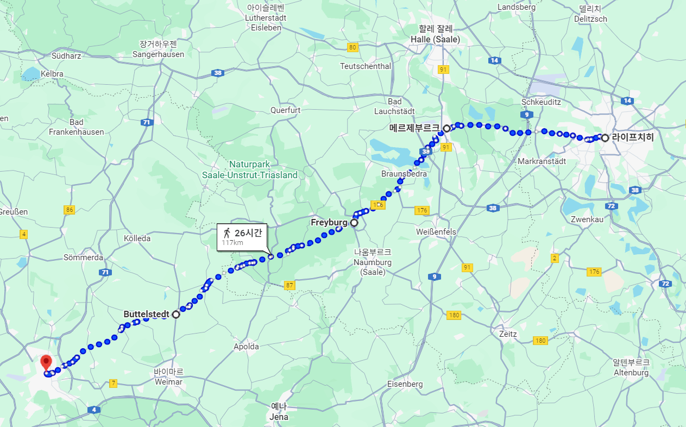
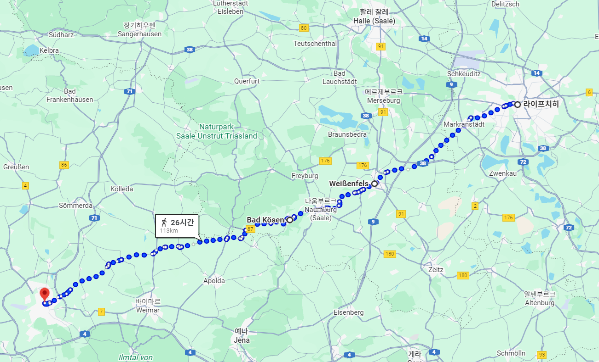
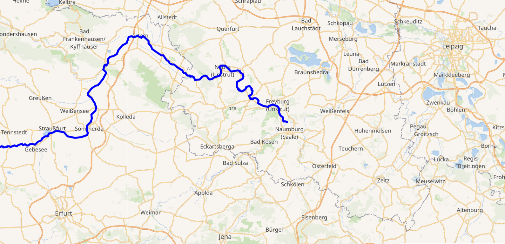

라이프치히 전투 (24) - 둘째 날과 세째 날 사이
게시: 2025-11-17T06:30:13+09:00
나폴레옹의 탈출구로 의심되는 라이프치히 북동쪽 방면, 즉 바트 뒤벤 쪽 방면을 틀어막아 달라는 요청을 거부한 베르나도트에게는 나름 합리적인 이유가 있었습니다. 나폴레옹이 아무리 궁지에 몰려 탈출해야 하는 신세라고 해도, 아직 그에게는 최소 15만, 아마도 20만에 달하는 대군이 있었습니다. 쥐도 구석에 몰리면 고양이를 문다고 했는데, 나폴레옹은 쥐가 아니라 나폴레옹이었습니다. 당대의 군사적 천재인 나폴레옹이 20만 대군을 몰고 죽기 살기로 탈출하는 그 길목을 막아선다는 것은 너무나 위험한 임무였습니다. 그런데 베르나도트에게는 기껏해야 6만5천의 병력 밖에 없었습니다. 원래 베르나도트는 8만이 넘는 병력을 가지고 있었으나, 바로 며칠 전, 나폴레옹이 레이니에의 군단을 엘베강 우안으로 도하시켜 로슬라우(Rosslau)의 부교를 공격할 때, 베르나도트 휘하인 타우엔치언(Bogislav Friedrich Emanuel von Tauentzien)의 프로이센 군단이 베를린을 지킨다면서 베를린 방면으로 후퇴해버렸기 때문이었습니다.

(오랜만에 보는 타우엔치언의 초상화입니다. 10월 초에 레이니에의 군단이 엘베강을 건너 로슬라우까지 쳐들어갔을 때 타우엔치언의 군단은 베를린을 지키기 위해 이동했다고 하지만, 사실은 예상하지 못했던 공격에 허둥지둥 도망친 것에 불과했습니다. 그는 이때의 무질서한 후퇴로 인해 문책을 받지는 않았고, 라이프치히 전투가 끝난 직후에는 토르가우의 포위에 투입되어 두 달만인 12월 26일에 토르가우의 항복을 받아냈습니다. 1806년 예나 전투 직전에 벌어졌던 잘펠트(Saalfeld) 전투에서는 그가 지휘하던 부대가 베르나도트의 군단과 정면으로 부딪혀 싸우다 후퇴한 적이 있었는데, 1813년에는 바로 그 베르나도트의 지휘를 받아 나폴레옹과 싸웠으니 타우엔치언도 기분이 매우 이상했을 것 같습니다.) 블뤼허는 베르나도트 혼자서 나폴레옹의 대군을 막아서는 일은 절대 없을 것이며, 나폴레옹이 정말로 바트 뒤벤 방면으로 탈출할 경우 자신은 물론 슈바르첸베르크의 보헤미아 방면군도 신속하게 달려와 나폴레옹을 협공할 것이라고 설득했습니다. 그러나 베르나도트는 물론 그렇게 주장하는 블뤼허조차도, 바로 몇 주 전 드레스덴 전투에서 그렇게 느린 행군 속도를 보여준 보헤미아 방면군이 파르터강을 건너 신속하게 달려올 것이라고는 도저히 자신할 수 없었습니다. 자신의 소극적인 지휘에 대해 연합군 수뇌부의 비난이 팽배해있다는 것을 잘 알고 있던 베르나도트는 겉보기엔 그럴싸한 대안도 내놓았습니다. 바트 뒤벤 방면을 몸으로 틀어막는 대신, 자신은 라이프치히-바트 뒤벤 경로의 측면에 대기하고 있다가 나폴레옹이 그 경로로 탈출할 경우 그 측면을 들이치겠다는 것이었습니다. 그렇게 하면 자신의 적은 병력으로도 후퇴하는 나폴레옹에게 결정적인 타격을 줄 수 있다는 것이었지요. 하지만 이건 절대 위험한 임무는 맡지 않겠다는 베르나도트의 얄팍한 꼼수일 뿐, 실질적으로는 베르나도트는 블뤼허의 우익 뒤에 숨어있겠다는 소리라는 것은 블뤼허 뿐만 아니라 합석한 다른 연합군 인사들에게도 분명히 드러나 보였습니다. 분위기가 좋지 않자, 베르나도트는 다른 대안도 내놓았습니다. 자신이 가장 위험한 임무를 맡게 되었으니, 블뤼허 휘하의 병력을 떼어서 자신에게 달라는 것이었습니다. 그는 처음에는 2만을 요구하다, 블뤼허가 그 요구를 들어줄 것처럼 말을 하자, 2만5천, 나중에는 3만을 요구했습니다. 이건 터무니 없는 요구였습니다. 블뤼허의 슐레지엔 방면군은 16일 첫날 전투에서 많은 사상자를 냈기 때문에, 이젠 불과 4만3천 정도 밖에 남아 있지 않았던 것입니다. 그러나 17일 밤 자정 가까이에 시작한 회의가 점점 늘어져 18일 새벽이 다가오도록 끝나질 않자, 결국 블뤼허는 이런 터무니 없는 요구를 받아들이기로 했습니다. 블뤼허로서는 어떻게든 바트 뒤벤 방면의 탈출로를 틀어막는 것이 중요했고, 또 어차피 3만을 실제로 내줄 수도 없으니, 자신의 휘하 4개 군단 중 가장 강력했던 랑쥬롱의 러시아 군단 약 1만8천의 지휘권을 베르나도트에게 넘겨주는 선에서 합의를 보기로 한 것입니다. 블뤼허는 랑쥬롱 군단의 형식적인 지휘권을 베르나도트에게 넘겨주더라도, 자신이 랑쥬롱의 군단 사령부에 상주함으로써 여차하면 자신이 실질적인 지휘권을 행사할 속셈이었습니다.

(블뤼허의 눈에는 정말 뺀질거리는 얌체로 보였을 베르나도트가 스웨덴 국왕 카알 14세 요한(Karl XIV Johan)이 된 모습입니다. 그의 국왕 즉위 25주년 기념작으로서 1843년 경 그려진 그림이니까 81세의 나이로 죽기 1년 전의 모습입니다. 과도하게 보정이 되었는지 얼굴에 주름이 하나도 없네요. 참고로 그는 나폴레옹보다 6살 연상이었습니다.) 이 합의는 운명의 18일 아침 해가 뜰 때 즈음에야 이루어졌습니다. 블뤼허가 회의 장소였던 베르나도트의 숙영지인 브라이텐펠트(Breitenfeld)로부터 약 6~7km 떨어진 오이트리츠쉬(Eutritzsch)로 말을 달려왔을 때는, 이미 남쪽 전선에서는 보헤미아 방면군이 공격을 개시하여 포성이 울리고 있을 정도였습니다. 베르나도트의 북부 방면군은 맡은 위치로 이동하기 위해 서둘렀고, 랑쥬롱은 갑자기 바뀐 명령 체계에 어리둥절하면서도 새로운 상관인 베르나도트의 명령서에 따라 타우하(Taucha) 상류에서 파르터강을 건너기 위한 준비에 나섰습니다. 한편, 이들의 예상과는 정반대로 처음부터 서쪽으로의 탈출을 마음 먹고 있던 나폴레옹은 딱히 하는 일도 없이 이런저런 보고를 받고 뮈라 등 부하들과 우울한 대화를 나누면서 17일 전투 둘째 날을 통째로 허송세월 하는 듯 했습니다. 그는 사실 후퇴할 경로를 고민하고 있었습니다. 후퇴할 목적지는 처음부터 분명했습니다. 든든한 요새에 각종 군수품을 잔뜩 비축해놓은 에르푸르트(Erfurt)였습니다. 문제는 거기까지 어느 경로로 가느냐 하는 것이었습니다. 크게 나누면 2가지 길이 있었습니다. 하나는 메르제부르크(Merseburg)-프라이부르크(Freyburg)-부텔슈테트(Buttelstedt)로 이어지는 길이었고, 다른 하나는 더 남쪽의 바이센펠스(Weißenfels)-바트 쾨센(Bad Kösen)으로 이어지는 길이었습니다.
(이 그림 속 건물은 에르푸르트 근교에 있던 Napoleonshöhe, 즉 나폴레옹 언덕이라는 이름의 기념 건축물로서, 1811년 나폴레옹의 생일을 기념하여 목재에 석회를 입혀 만든 것입니다. 에르푸르트는 중세 이후 자유도시의 지위를 누리다 종교 전쟁 속에서 쇠퇴하여 독립을 잃었는데, 프랑스에게 영토를 빼앗긴 것에 대한 보상으로서 1802년 프로이센 영토가 되었습니다. 그러나 1806년 프로이센을 박살낸 나폴레옹은 에르푸르트를 라인 연방의 일원도 아닌, 황제 직할령(domaine réservé à l'empereur)으로 지정하여 프랑스 영토로 만들었습니다. 그에 대해 에르푸르트 시민들은 영광으로 생각했을까요? 1814년 에르푸르트가 함락되자 시민들은 이 나폴레옹 기념 건축물에 불을 질러 완전히 없애버린 것을 보면 전혀 그렇지 않았던 것 같습니다.)

(이 경로가 메르제부르크-프라이부르크-부텔슈테트-에르푸르트로 이어지는 길입니다.)

(이 경로가 바이센펠스-바트 쾨센-에르푸르트로 이어지는 길입니다. 사실 메르제부르크 경로에 비해 그다지 짧지도 않습니다.) 이 두 길에는 다 일장일단이 있었습니다. 메르제부르크 경로는 약간 돌아가는 길인데다가, 잘러강을 건널 때 블뤼허 및 베르나도트의 요격 범위 안에 들어갈 수 밖에 없었습니다. 하지만 훨씬 더 강력한 적군인 슈바르첸베르크의 보헤미아 방면군으로부터는 꽤 멀리 떨어져 행군할 수 있었습니다. 그에 비해 바이센펠스 경로는 에르프루트까지 가장 직선으로 가는 길이었지만 슈바르첸베르크의 요격 범위 안에 들어갈 수 있었고, 바이센펠스 너머에서는 도로 사정이 좋지 않다는 어려움이 있었습니다.

(운슈트루트강은 저 멀리 서쪽 튀링겐에서 발원하여 나움부르크 및 바트 쾨센 인근에서 잘러강과 합류하는 잘러강의 지류입니다.) 이런저런 계산을 하며 고민하던 나폴레옹은 결국 17일 저녁 7시 무렵에야 베르트랑의 제4군단에게 명령을 내렸습니다. 그 내용은 그 날 저녁 무렵에야 도착한 레이니에의 제7군단 중 1개 사단과, 기타 다른 군단으로부터 기병대와 포병대 등을 떼내어 제4군단에 배속 시켜줄 것이니, 메르제부르크(Merseburg) 및 바이센펠스(Weißenfels) 쪽으로 향하는 길과 잘러(Saale) 강 및 운슈트루트(Unstrut) 강의 다리를 확보하라는 것이었습니다. 명령은 이렇게 두 방향의 길을 모두 확보하라는 것이었지만, 나폴레옹은 이미 바이센펠스 경로를 택하기로 마음을 먹은 상태였습니다. 예전처럼 보헤미아 방면군의 추격 속도가 느릴 것이라는 판단 때문이었습니다. 이미 탈출에는 좀 늦은 감이 있지만, 이제 레이니에의 제7군단도 도착했으니 어차피 후퇴할 것이라면 지금 당장 출발하는 것이 유리했을 것입니다. 하지만 나폴레옹은 베르트랑에게 당장 출발하라고는 명령하지 않았습니다. 그리고 다시 7시간이 지난 18일 새벽 2시, 나폴레옹은 전군에게 엉뚱한 명령을 내렸습니다. Source : The Life of Napoleon Bonaparte, by William Milligan Sloane Napoleon and the Struggle for Germany, by Leggiere, Michael V With Napoleon's Guns by Colonel Jean-Nicolas-Auguste Noël https://www.britannica.com/event/Napoleonic-Wars/Dispositions-for-the-autumn-campaign http://www.historyofwar.org/articles/campaign_leipzig.html https://warhistory.org/@msw/article/leipzig-battle-of-the-nations https://www.encyclopedia.com/history/encyclopedias-almanacs-transcripts-and-maps/leipzig-battle-0 https://en.wikipedia.org/wiki/Charles_XIV_John https://en.wikipedia.org/wiki/Unstrut https://en.wikipedia.org/wiki/Bogislav_Friedrich_Emanuel_von_Tauentzien